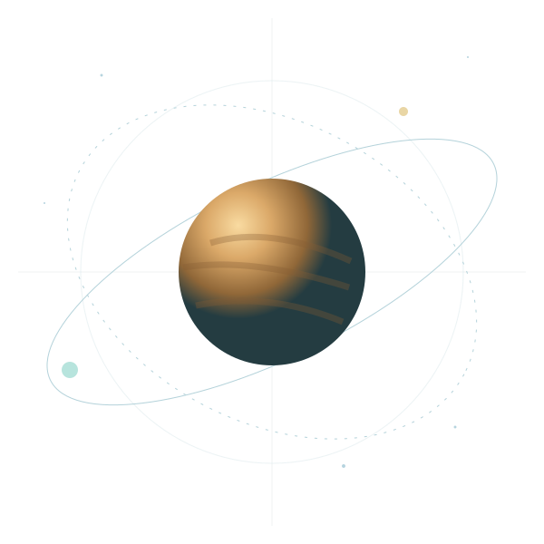
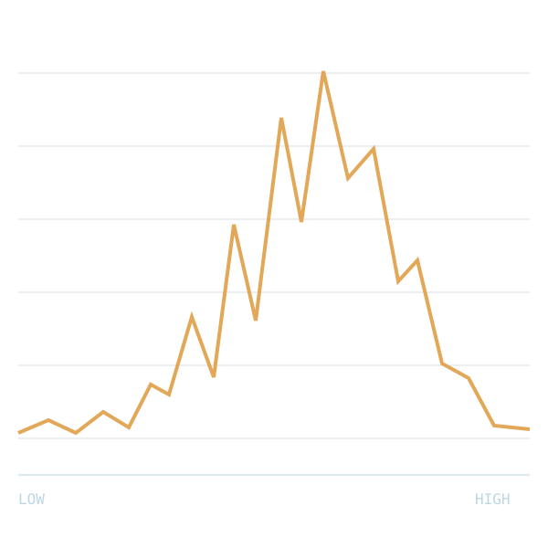

ORBIT ATLAS VISUAL MODEL / NOT OBSERVATIONAL DATA
Study the relationship
Patterns
in the dark.
Trace a path.
Make the invisible legible.
PRIMARY BODY REFERENCE PATH

A / REFERENCE
B / RELATION
RELATIVE INTENSITYILLUSTRATIVE CURVE
